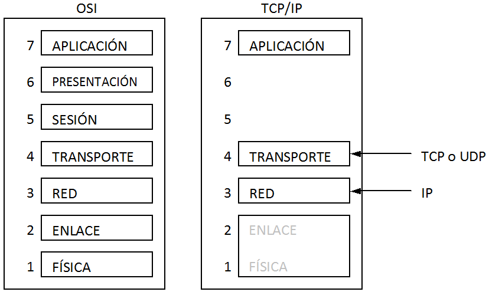

2.2. Arquitectura TCP/IP
La arquitectura TCP/IP, comparándola con el modelo OSI, se puede considerar como un modelo simplificado de la misma. Debe su nombre a los protocolos más importantes de este modelo: IP y TCP.
Tanto TCP/IP como el modelo OSI compitieron al principio. TCP/IP era más simple y se desarrolló antes frente a OSI, cuyas primeras implementaciones no tuvieron un resultado satisfactorio. Todo ello llevó a que TCP/IP se utilizara más, tuvieran lugar las primeras versiones con las consiguientes mejoras en detrimento del modelo OSI.
En la arquitectura TCP/IP se especifica muy poco en las capas inferiores (física y enlace) dejando unos interfaces muy abiertos que pueden variar mucho dependiendo del medio de transmisión que se utilice. Algo parecido ocurre en las capas superiores. No existe nivel de presentación y las funciones de esta capa han sido asumidas por la propia aplicación de usuario. La función de control del diálogo de la capa de sesión se ha trasladado a la capa de transporte.

Comparativa gráfica entre el modelo de referencia OSI y TCP/IP
Fuente: Tanenbaum, A. S. Redes de computadoras. Editorial Pearson Educación. 2003
Comparando TCP/IP con el modelo OSI, hay algunas desventajas en aquel. Una de las características muy positivas de OSI es su modularidad. Es decir, dado que se distingue perfectamente en conceptos como primitivas de acceso al servicio (con las que una capa superior puede solicitar un servicio a la capa inferior), protocolos (lenguaje que utilizan dos capas iguales de diferentes ordenadores para entenderse) e interfaz (límite que distingue el medio de transmisión y la capa de nivel físico), es fácil realizar un cambio de tecnología en este modelo sin que el resto de las capas se vean afectadas. Esto mismo no ocurre en TCP/IP debido a esa libertad o falta de especificación en algunas capas.
Una de las claves del éxito de TCP/IP se debe al protocolo IP (Internet Protocol). Este protocolo asegura el envío de paquetes de un origen a un destino pudiendo pasar por distintos elementos de red intermedios. Esto implica que cada paquete puede seguir un camino diferente y sufrir distintos retardos. Esta característica puede ser importante para el servicio que se esté llevando a cabo y puede ser necesario que se ordenen en el destino. Esta función la hace el protocolo TCP (Transmission Control Protocol).
En la capa de transporte, existen dos protocolos:
- TCP (Transmission Control Protocol) o protocolo de control de la transmisión. Es un protocolo orientado a la conexión y asegura una entrega de datos fiables. Este tipo de protocolos es necesario cuando se necesita, por ejemplo, que los paquetes se entreguen al destinatario ordenados.
- UDP (User Datagram Protocol) o protocolo de datagramas de usuario. Es un protocolo que ofrece una entrega de datos no fiable entre un origen y un destino. Este tipo de protocolos se utiliza cuando es necesario hacer una entrega puntual de un origen a un destino.
Importante
La arquitectura TCP/IP tiene las siguientes características:
- Es parecida al modelo OSI pero simplificado.
- Se especifica muy poco en las capas inferiores del modelo dejando interfaces muy abiertos que pueden variar mucho dependiendo del medio de transmisión elegido.
- Se aligeran las capas superiores: no hay capa de presentación y algunas funciones de la capa de sesión se deja para la capa de transporte.
- TCP/IP tiene algunas desventajas como la falta de modularidad o independencia entre capas.
- La clave del éxito de TCP/IP radica en sus protocolos más importantes:
- IP (Internet Protocol) asegura una entrega de paquetes de origen a destino incluso pasando por elementos de red intermedios.
- TCP (Transmission Control Protocol) es un protocolo orientado a la conexión y asegura una entrega de datos fiables.
- UDP (User Datagram Protocol) es un protocolo que ofrece una entrega de datos no fiable entre un origen y un destino.